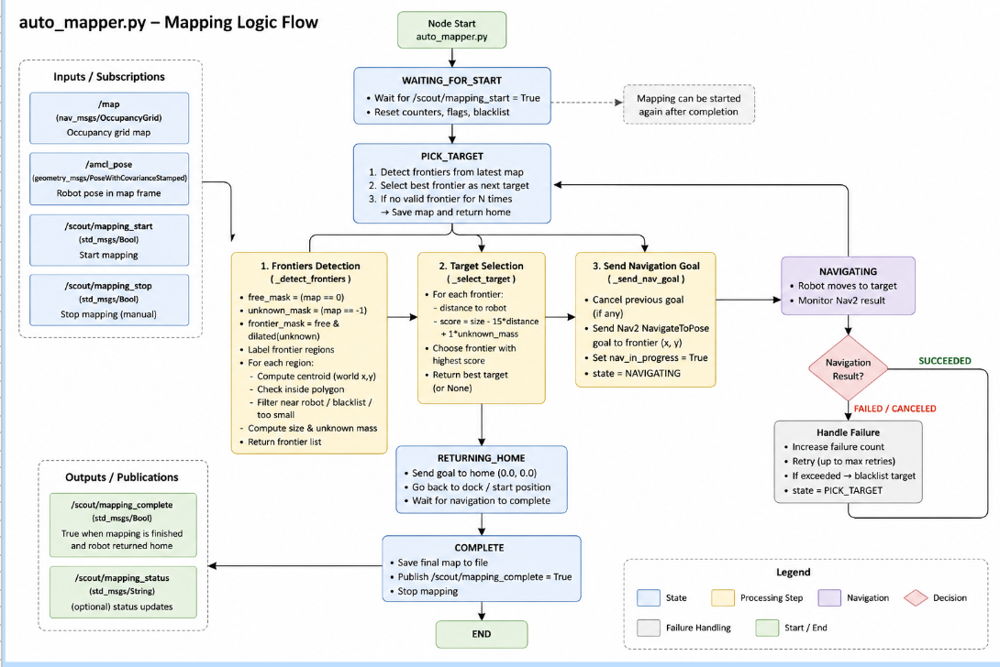

Implementation
Turtlebot
System Launch
Our launch file is the big start button, launching all the nodes we need to make the turtlebot side of the project work, that includes our mapping, perception and mission management. For ease of development we used command line arguments to launch variations of our code (sim vs real), (manual vs auto map) etc.. This is also where we tune some of our node parameters
SLAM & NAV 2
We utilize slam toolbox for mapping the room and nav2 for navigation. Our initial plan was to build our system using these tools and then later substitute them with our own custom trajectory planning, and execution and mapping pipelines but ended up not having enough time to implement our own pipelines. For trajectory planning we planned to use a gradient river approach where after getting the location of the cones and our map we create a gradient map based off our occpancy grid and "flood it" from our start to desired position. and for trajectory execution we planned to use a simple PID to track the reference trajectory.
AutoMapper
Our first thoughts were to use explore lite, but due to constrained space we opted for a more custom solution so implemented a frontier exploration based mapper. And a bounding polygon In essence it looks for unknown “frontiers” next to known areas on our map. Ranks them and navigates towards then using Nav2’s action server. To detect our frontiers we first have to filter our map from SLAM toolbox, every map goes through a set of masks and binary_dilations to filter out the cells that correspond to frontiers. We then use ndimage.label to cluster like cells and find the “mass” of unknown regions, returning the center, mass and size of our frontiers. We select our frontiers using a scoring system weighted by the mass, distance from the robots current position in the map frame (derived from the transform between map and base_link), and size of the frontier. Finally once we have detected our frontiers we send a goal to nav2 so our robot can explore the area and complete the map.
HSV
Due to initially using Red, yellow and blue cones we saw issues when detecting yellow cones so adopted HSV as a better detection approach, converting RGB images to HSV using OpenCv. Then for each of our labels we first run our image through some masks to clear up noise, using morphology, (opening up pixels and then closing them) to get rid of holes and stray noise. Finally we run find_countours to get our dimensions and confidence
Hazard Detector
This nodes job is all about sensor fusion. Our Sensor Fusion was probably the hardest part of the turtlebot side of the project. We initially tried the method in lab 8 to detect the position of the hazard cones however as in lab this can be unstable, so we opted to use both the camera and lidar to sense the cones positions, one for color, one for distance. The first stage is to get our detections from the image using HSV, then try an match it to a cluster from the lidar scan so 3 stages, image bearings, lidar clusters, matching them
The first approach we took to clustering was very simple, first we filtered out or scan to only care about the front half the direction corresponding to the camera direction, we then ran a simple linear clustering approach looking at the ranges in order and creating clusters based on jumps in range outside a certain threshold. This worked amazingly well in simulation but the first real test showed us this approach was significantly flawed with real lidar noise.
We first considered converting the points from their polar (range, bearing) form to cartesian and running dbscan or some other clustering method however we already had an approach and saw an easier fix The improved approach we took to fix this was to use an approach known as agglomerative clustering. The clustering we just did outputs sometimes small 2 or 3 ray clusters due to noise. If we then cluster those clusters based on their Euclidean distance we get much more accurate and robust clustering of our lidar space.
Our first approach to this was a simple greedy approach where for every detection we just pick the best cluster and assign it to that color however this caused some issues as multiple colors could get assigned to a single cluster.
Instead we wanted to shift to a global greedy approach match_cluster_2. We started this by passing all detections and all clusters then doing an assignment using a matrix of scores, however we just reduced the minimum threshold for matching and this allowed us to skip the global method for now
After this matching we convert the polar form to map coords and then publish a hazard message indicating our detection.
Hazard Tracker
Receives raw hazard detections from Hazard Detector. Merges detections with the same color if they are within the merge radius. After three observations of the same hazard, the track is confirmed. Continuously averages the hazard position to reduce localization noise. Publishes confirmed hazards for Mission Manager and RViz visualization.
Mission Manager
The Mission Manager is the main orchestrator FSM for the turtlebot. The detailed FSM can be seen below. In essence it maintains the mission state from auto-mapping, to navigating, waiting for the block etc. ect. It is the core logic of our project and involves many checks and messages. It also makes use of a different way to communicate with Nav2 the basic navigator. An example mission can be seen on the results page (this is the backend of our demo)
Main FSM Workflow

Domain Bridge
UR7e
Perception
The perception node (process_pointcloud.py) identifies the 3D positions of colored blocks on a table using the RealSense depth camera's pointcloud then transforms the entire cloud into the robot's base_link frame.
The node then applies a filter to only retain the table surface.
A greedy clustering algorithm groups the points by proximity in the XY plane.
Starting from an arbitrary seed point, it assigns all points within a fixed radius to the same cluster, and discards clusters with small number of points to suppress noise.
For each valid cluster, the mean RGB value determines the block's color. For simplicity, we used green instead of yellow for better RGB classification (yellow_block in code = green colored block in reality).
The centroid of each cluster is then published as a PointStamped message on the corresponding /red_block_pose, /blue_block_pose, or /yellow_block_pose topic.
ArUco Marker Detection
The ArUco node (aruco_node.py) handles real-time detection and pose estimation using OpenCV's ArUco library.
It initializes by reading the camera’s intrinsic parameters from a single CameraInfo message, then processes each incoming image frame by converting it to grayscale and detecting markers using the DICT_5X5_250 dictionary.
For detected markers, it estimates poses with estimatePoseSingleMarkers.
Rotation vectors are converted into quaternions through Rodrigues transformation and a custom quaternion conversion function.
The node then publishes each marker as a TF2 transform relative to the camera frame, while also outputting marker poses through PoseArray and ArucoMarkers topics.
Motion Planning and IK
The IKPlanner class (ik.py) uses MoveIt services to provide inverse kinematics and motion planning.
The compute_ik sends a GetPositionIK request to MoveIt's /compute_ik service.
The plan_to_joints then calls MoveIt's /plan_kinematic_path service using RRTConnect.
Task Execution
main.py sequences the full pick-and-place pipeline.
When a color command arrives on /scout/package_request, the node resolves the target block's 3D position from the most recent perception output and pre-computes a chained series of IK solutions using each solution as the seed for the next, so the arm takes an efficient joint-space path through the sequence.
These IK results are pushed onto self.job_queue. Each call to execute_jobs pops one item and dispatches it.
When the arm is stationary at the discovery position and ArUco tag #10 is detected, _aruco_cb transforms the marker pose into base_link and queues a drop IK target, gripper release, retreat, return-to-home motion, and sends True on /scout/package_ready for the TurtleBot.